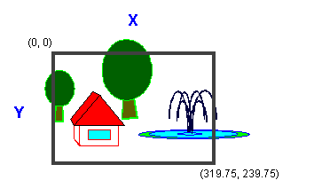

The device coordinate system is the coordinate system used to fit an image into the physical size of the frame buffer by using the pixel addresses in the frame buffer. Generally, the physical size of the N64 frame buffer is 320 by 240. The upper-left corner of the screen is (0,0) and the bottom-right is (319.75, 239.75).
A Z value factor is also included. The deepest (farthest away) value is expressed as 65532 (0xfffc) and the closest value is expressed as 0. The Z buffer uses a macro that sets the initial value of the Z factor by using the macro-arguments G_MAXFBZ and GPACK_ZDZ. The macro converts an image currently in the normal screen coordinate system into the actual physical screen pixels so that it can be shown on the TV screen as shown here:

Coordinates in the device coordinate system are expressed as (xd,yd,zd).
Nintendo® Confidential
Copyright © 1999
Nintendo of America Inc. All Rights Reserved
Nintendo and N64 are registered trademarks of Nintendo
Last Updated March, 1999